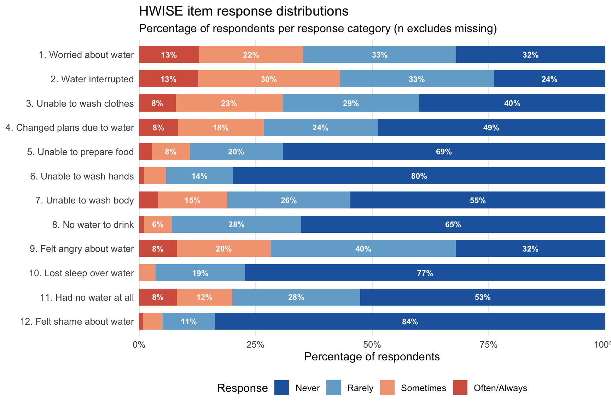

Last updated: 2026-03-16
Checks: 7 0
Knit directory: QUAIL-Mex/
This reproducible R Markdown analysis was created with workflowr (version 1.7.1). The Checks tab describes the reproducibility checks that were applied when the results were created. The Past versions tab lists the development history.
Great! Since the R Markdown file has been committed to the Git repository, you know the exact version of the code that produced these results.
Great job! The global environment was empty. Objects defined in the global environment can affect the analysis in your R Markdown file in unknown ways. For reproduciblity it’s best to always run the code in an empty environment.
The command set.seed(20241009) was run prior to running
the code in the R Markdown file. Setting a seed ensures that any results
that rely on randomness, e.g. subsampling or permutations, are
reproducible.
Great job! Recording the operating system, R version, and package versions is critical for reproducibility.
Nice! There were no cached chunks for this analysis, so you can be confident that you successfully produced the results during this run.
Great job! Using relative paths to the files within your workflowr project makes it easier to run your code on other machines.
Great! You are using Git for version control. Tracking code development and connecting the code version to the results is critical for reproducibility.
The results in this page were generated with repository version bcd8552. See the Past versions tab to see a history of the changes made to the R Markdown and HTML files.
Note that you need to be careful to ensure that all relevant files for
the analysis have been committed to Git prior to generating the results
(you can use wflow_publish or
wflow_git_commit). workflowr only checks the R Markdown
file, but you know if there are other scripts or data files that it
depends on. Below is the status of the Git repository when the results
were generated:
Ignored files:
Ignored: .DS_Store
Ignored: .RData
Ignored: .Rhistory
Ignored: .Rproj.user/
Ignored: analysis/.DS_Store
Ignored: analysis/.RData
Ignored: analysis/.Rhistory
Ignored: analysis/Hrs_by_HWISE score.png
Ignored: analysis/stacked_barplot.png
Ignored: code/.DS_Store
Ignored: data/.DS_Store
Ignored: output/.DS_Store
Untracked files:
Untracked: .claude/
Untracked: analysis/06.1.pss_models.Rmd
Untracked: analysis/06.2.emo_type_models.Rmd
Untracked: analysis/99.Maps.Rmd
Untracked: colonias_names.csv
Untracked: data/03.Conflicts_Q19_Q26_to_review.csv
Untracked: data/03.Conflicts_reviewed.csv
Untracked: data/03.Conflicts_to_review.csv
Untracked: data/03.Merged_Q1-6_Q16_Q19_Q26_Q28.csv
Untracked: data/03.continuous_to_review.csv
Untracked: output/TableS1.2_missing_data.docx
Untracked: output/TableS2_HWISE_PSS_overall.docx
Untracked: output/TableS3_HWISE_PSS_by_season.docx
Untracked: output/TableS4_characteristics_by_HWISE.docx
Untracked: output/TableS5_water_supply.docx
Untracked: output/TableS6_water_by_neighborhood.docx
Untracked: output/TableS7_water_by_season.docx
Untracked: output/~$bleS2_HWISE_PSS_overall.docx
Unstaged changes:
Modified: analysis/01.Data_cleaning.Rmd
Modified: analysis/03.Data_merge_Q1-6.Rmd
Modified: analysis/04.Descriptive_stats.Rmd
Deleted: analysis/Maps.Rmd
Modified: data/01.SCREENING.csv
Modified: data/01.SES_to_review.csv
Modified: data/01.Screening_clean.csv
Modified: data/01.conflicts_to_review.csv
Modified: data/01.conflicts_to_review_V2.csv
Modified: data/02.Merged_Screening_HWISE_PSS.csv
Deleted: data/03.Merged_Final.csv
Modified: data/03.Merged_Q1-6.csv
Deleted: data/Q19_consensus.csv
Modified: output/Table1_sample_characteristics.docx
Modified: output/TableS1_full_descriptives.docx
Note that any generated files, e.g. HTML, png, CSS, etc., are not included in this status report because it is ok for generated content to have uncommitted changes.
There are no past versions. Publish this analysis with
wflow_publish() to start tracking its development.
This document produces descriptive statistics tables for the merged
dataset (03.Merged_Q1-6.csv, produced by
03.Data_merge_Q1-6.Rmd). It includes:
A comprehensive descriptive statistics table (all analytic variables)
A manuscript table with sample characteristics stratified by season
A missing data summary table
HWISE and PSS descriptive statistics (overall and by season)
Sample characteristics stratified by water insecurity level (HWISE categories)
Objective water supply characteristics (source, continuity, frequency, hours of supply, pressure, and seasonality)
Visualizations for all of the above are in
05.Descriptive_plots.Rmd.
library(dplyr)
library(tidyr)
library(stringr)
library(gtsummary)
library(gt)
library(flextable)
library(purrr)
library(officer)
library(ggplot2)
data_path <- "./data"
MISSING_CODES <- c(999, 888, 777, 666, 555, 444, 333)
# Helper: convert sentinel codes to NA for descriptive stats
clean_for_table <- function(x) {
x_num <- suppressWarnings(as.numeric(as.character(x)))
ifelse(x_num %in% MISSING_CODES | is.na(x_num), NA, x_num)
}
# Helper: flag sentinel codes in free-text / character fields
SENTINEL_STRINGS <- as.character(c(999, 888, 777, 666, 555, 444, 333))
is_sentinel_str <- function(x) {
str_trim(as.character(x)) %in% SENTINEL_STRINGS
}df <- read.csv(file.path(data_path, "03.Merged_Q1-6_Q16_Q19_Q26_Q28.csv"),
stringsAsFactors = FALSE,
na.strings = c(""))
cat("Dimensions:", dim(df), "\n")Dimensions: 399 136 cat("Participants:", nrow(df), "\n")Participants: 399 Select and recode variables for the descriptive tables. All sentinel codes are converted to NA since they represent non-informative responses.
edu_levels <- c(
"No formal education",
"Incomplete primary (1–5 yrs)",
"Complete primary",
"Incomplete secondary (7–8 yrs)",
"Complete secondary",
"Incomplete high school (10–11 yrs)",
"Complete high school",
"Incomplete university (13–15 yrs)",
"Complete university",
"Postgraduate"
)
df_table <- df %>%
mutate(
# --- Demographics ---
Age = clean_for_table(D_AGE),
Yrs_in_nbhd = clean_for_table(D_LOC_TIME_CLEAN),
HH_size = clean_for_table(D_HH_SIZE),
Parity = clean_for_table(D_CHLD_CLEAN),
# --- Season ---
Season = factor(SEASON,
levels = c(0, 1),
labels = c("Rainy", "Dry")),
# --- SES ---
Education = factor(
dplyr::recode(as.character(SES_EDU_CAT_CLEAN),
"Incomplete primary" = "Incomplete primary (1–5 yrs)",
"Incomplete secondary" = "Incomplete secondary (7–8 yrs)",
"Incomplete high school" = "Incomplete high school (10–11 yrs)",
"Incomplete university" = "Incomplete university (13–15 yrs)"
),
levels = edu_levels, ordered = TRUE
),
SES = factor(SES_CAT_AMAI,
levels = c("E", "D-", "D+", "C-", "C", "C+", "AB"),
ordered = TRUE),
# --- Employment ---
Employed = factor(clean_for_table(D_EMP_CLEAN),
levels = c(0, 1),
labels = c("No", "Yes")),
Employment_type = factor(clean_for_table(D_EMP_FORM_CLEAN),
levels = c(0, 1),
labels = c("Informal", "Formal")),
# --- Health ---
Smoking = factor(clean_for_table(HLTH_SMK_CLEAN),
levels = c(0, 1, 2),
labels = c("No", "Yes", "Occasionally")),
Hormonal_tx = factor(clean_for_table(HLTH_TTM_CAT),
levels = c(0, 1), labels = c("No", "Yes")),
Medication = factor(clean_for_table(HLTH_MED_CAT),
levels = c(0, 1), labels = c("No", "Yes")),
Chronic_pain = factor(clean_for_table(HLTH_CPAIN_CAT),
levels = c(0, 1), labels = c("No", "Yes")),
Chronic_dis = factor(clean_for_table(HLTH_CDIS_CAT),
levels = c(0, 1), labels = c("No", "Yes")),
# --- HWISE ---
HWISE_Total = clean_for_table(HW_TOTAL),
# Standard HWISE categories (Young et al. 2019, BMJ Global Health)
# 0 = secure; 1-11 = marginal; 12-23 = moderate; 24-36 = severe
HWISE_Cat = factor(
case_when(
is.na(clean_for_table(HW_TOTAL)) ~ NA_character_,
clean_for_table(HW_TOTAL) == 0 ~ "Secure (0)",
clean_for_table(HW_TOTAL) <= 11 ~ "Marginal (1-11)",
clean_for_table(HW_TOTAL) <= 23 ~ "Moderate (12-23)",
TRUE ~ "Severe (24-36)"
),
levels = c("Secure (0)", "Marginal (1-11)",
"Moderate (12-23)", "Severe (24-36)")
),
Water_worry = clean_for_table(HW_WORRY_SUB),
# --- Individual HWISE items ---
HW_Worry = clean_for_table(HW_WORRY),
HW_Interr = clean_for_table(HW_INTERR),
HW_Clothes = clean_for_table(HW_CLOTHES),
HW_Plans = clean_for_table(HW_PLANS),
HW_Food = clean_for_table(HW_FOOD),
HW_Hands = clean_for_table(HW_HANDS),
HW_Body = clean_for_table(HW_BODY),
HW_Drink = clean_for_table(HW_DRINK),
HW_Angry = clean_for_table(HW_ANGRY),
HW_Sleep = clean_for_table(HW_SLEEP),
HW_None = clean_for_table(HW_NONE),
HW_Shame = clean_for_table(HW_SHAME),
# --- PSS-14 ---
PSS_Total = clean_for_table(PSS_TOTAL),
# Tertile-based PSS categories
PSS_Cat = factor(
case_when(
is.na(clean_for_table(PSS_TOTAL)) ~ NA_character_,
clean_for_table(PSS_TOTAL) <= 22 ~ "Low stress (≤22)",
clean_for_table(PSS_TOTAL) <= 31 ~ "Moderate stress (23-31)",
TRUE ~ "High stress (≥32)"
),
levels = c("Low stress (≤22)", "Moderate stress (23-31)",
"High stress (≥32)")
)
)Includes all analytic variables. Intended as a supplementary table for the dissertation.
tbl_full <- df_table %>%
select(Age, Yrs_in_nbhd, HH_size, Parity,
SES, Education, Employed, Employment_type,
Smoking, Hormonal_tx, Medication, Chronic_pain, Chronic_dis,
Season) %>%
tbl_summary(
by = Season,
statistic = list(
all_continuous() ~ "{mean} ({sd})",
all_categorical() ~ "{n} ({p}%)"
),
type = list(Parity ~ "continuous"),
digits = list(all_continuous() ~ 1),
missing = "no",
label = list(
Age ~ "Age (years)",
Yrs_in_nbhd ~ "Years in neighborhood",
HH_size ~ "Household size",
Parity ~ "Parity",
SES ~ "SES (NSE-AMAI)",
Education ~ "Education",
Employed ~ "Currently employed",
Employment_type ~ "Employment type",
Smoking ~ "Smoking status",
Hormonal_tx ~ "Hormonal treatment",
Medication ~ "Regular medication use",
Chronic_pain ~ "Chronic pain",
Chronic_dis ~ "Chronic disease"
)
) %>%
add_overall(last = FALSE) %>%
add_p(test = list(
all_continuous() ~ "t.test",
all_categorical() ~ "chisq.test"
)) %>%
bold_labels() %>%
add_n(statistic = "{p_miss}%",
col_label = "**Missing (%)**") %>%
modify_table_body(~ .x %>% relocate(n, .after = last_col())) %>%
modify_spanning_header(c("stat_1", "stat_2") ~ "**By season**") %>%
modify_header(label = "**Variable**") %>%
modify_caption("**Table S1. Sample characteristics — full variable set (n = {N})**")The following warnings were returned during `modify_caption()`:
! For variable `Education` (`Season`) and "statistic", "p.value", and
"parameter" statistics: Chi-squared approximation may be incorrect
! For variable `Hormonal_tx` (`Season`) and "statistic", "p.value", and
"parameter" statistics: Chi-squared approximation may be incorrecttbl_full| Variable | Overall N = 3991 |
By season
|
p-value2 | Missing (%) | |
|---|---|---|---|---|---|
| Rainy N = 2021 |
Dry N = 1971 |
||||
| Age (years) | 32.3 (7.4) | 33.2 (7.1) | 31.3 (7.6) | 0.010 | 0.8% |
| Years in neighborhood | 22.4 (11.4) | 22.8 (11.3) | 22.0 (11.5) | 0.5 | 8.5% |
| Household size | 5.6 (3.5) | 6.7 (4.2) | 4.4 (1.7) | <0.001 | 5.8% |
| Parity | 1.9 (1.3) | 1.9 (1.2) | 1.8 (1.3) | 0.3 | 4.8% |
| SES (NSE-AMAI) | 0.15 | 9.8% | |||
| E | 12 (3.3%) | 4 (2.2%) | 8 (4.6%) | ||
| D- | 51 (14%) | 22 (12%) | 29 (17%) | ||
| D+ | 53 (15%) | 25 (13%) | 28 (16%) | ||
| C- | 82 (23%) | 44 (24%) | 38 (22%) | ||
| C | 85 (24%) | 41 (22%) | 44 (25%) | ||
| C+ | 50 (14%) | 32 (17%) | 18 (10%) | ||
| AB | 27 (7.5%) | 18 (9.7%) | 9 (5.2%) | ||
| Education | 0.2 | 2.3% | |||
| No formal education | 1 (0.3%) | 0 (0%) | 1 (0.5%) | ||
| Incomplete primary (1–5 yrs) | 16 (4.1%) | 10 (5.1%) | 6 (3.1%) | ||
| Complete primary | 36 (9.2%) | 16 (8.1%) | 20 (10%) | ||
| Incomplete secondary (7–8 yrs) | 25 (6.4%) | 16 (8.1%) | 9 (4.7%) | ||
| Complete secondary | 135 (35%) | 56 (28%) | 79 (41%) | ||
| Incomplete high school (10–11 yrs) | 48 (12%) | 27 (14%) | 21 (11%) | ||
| Complete high school | 90 (23%) | 52 (26%) | 38 (20%) | ||
| Incomplete university (13–15 yrs) | 10 (2.6%) | 6 (3.0%) | 4 (2.1%) | ||
| Complete university | 27 (6.9%) | 14 (7.1%) | 13 (6.8%) | ||
| Postgraduate | 2 (0.5%) | 1 (0.5%) | 1 (0.5%) | ||
| Currently employed | 269 (70%) | 138 (70%) | 131 (71%) | 0.8 | 4.3% |
| Employment type | 0.5 | 46% | |||
| Informal | 154 (72%) | 81 (74%) | 73 (70%) | ||
| Formal | 60 (28%) | 28 (26%) | 32 (30%) | ||
| Smoking status | 0.4 | 4.0% | |||
| No | 268 (70%) | 142 (71%) | 126 (69%) | ||
| Yes | 96 (25%) | 46 (23%) | 50 (27%) | ||
| Occasionally | 19 (5.0%) | 12 (6.0%) | 7 (3.8%) | ||
| Hormonal treatment | 8 (2.3%) | 4 (2.2%) | 4 (2.4%) | >0.9 | 12% |
| Regular medication use | 15 (4.5%) | 11 (6.2%) | 4 (2.5%) | 0.2 | 16% |
| Chronic pain | 105 (27%) | 53 (27%) | 52 (27%) | >0.9 | 0.8% |
| Chronic disease | 66 (17%) | 25 (12%) | 41 (21%) | 0.033 | 0% |
| 1 Mean (SD); n (%) | |||||
| 2 Welch Two Sample t-test; Pearson’s Chi-squared test | |||||
Sample characteristics stratified by season to show comparability across data collection waves.
tbl_ms <- df_table %>%
select(
Season, Age, Yrs_in_nbhd, HH_size, Parity,
SES, Education,
Employed, Employment_type,
Smoking, Chronic_pain, Chronic_dis
) %>%
tbl_summary(
by = Season,
statistic = list(
all_continuous() ~ "{mean} ({sd})",
all_categorical() ~ "{n} ({p}%)"
),
type = list(Parity ~ "continuous"),
digits = list(all_continuous() ~ 1),
missing = "no",
label = list(
Age ~ "Age",
Yrs_in_nbhd ~ "Years in neighborhood",
HH_size ~ "Household size",
Parity ~ "Parity",
SES ~ "SES (NSE-AMAI)",
Education ~ "Education",
Employed ~ "Employed",
Employment_type ~ "Employment type",
Smoking ~ "Smoking",
Chronic_pain ~ "Chronic pain",
Chronic_dis ~ "Chronic disease"
)
) %>%
add_overall(last = FALSE) %>%
add_p(test = list(
all_continuous() ~ "t.test",
all_categorical() ~ "chisq.test"
)) %>%
bold_labels() %>%
modify_spanning_header(c("stat_1", "stat_2") ~ "**Season of data collection**") %>%
modify_header(label = "**Variable**") %>%
modify_caption("**Table 1. Sample characteristics by season**")The following warnings were returned during `modify_caption()`:
! For variable `Education` (`Season`) and "statistic", "p.value", and
"parameter" statistics: Chi-squared approximation may be incorrecttbl_ms| Variable | Overall N = 3991 |
Season of data collection
|
p-value2 | |
|---|---|---|---|---|
| Rainy N = 2021 |
Dry N = 1971 |
|||
| Age | 32.3 (7.4) | 33.2 (7.1) | 31.3 (7.6) | 0.010 |
| Years in neighborhood | 22.4 (11.4) | 22.8 (11.3) | 22.0 (11.5) | 0.5 |
| Household size | 5.6 (3.5) | 6.7 (4.2) | 4.4 (1.7) | <0.001 |
| Parity | 1.9 (1.3) | 1.9 (1.2) | 1.8 (1.3) | 0.3 |
| SES (NSE-AMAI) | 0.15 | |||
| E | 12 (3.3%) | 4 (2.2%) | 8 (4.6%) | |
| D- | 51 (14%) | 22 (12%) | 29 (17%) | |
| D+ | 53 (15%) | 25 (13%) | 28 (16%) | |
| C- | 82 (23%) | 44 (24%) | 38 (22%) | |
| C | 85 (24%) | 41 (22%) | 44 (25%) | |
| C+ | 50 (14%) | 32 (17%) | 18 (10%) | |
| AB | 27 (7.5%) | 18 (9.7%) | 9 (5.2%) | |
| Education | 0.2 | |||
| No formal education | 1 (0.3%) | 0 (0%) | 1 (0.5%) | |
| Incomplete primary (1–5 yrs) | 16 (4.1%) | 10 (5.1%) | 6 (3.1%) | |
| Complete primary | 36 (9.2%) | 16 (8.1%) | 20 (10%) | |
| Incomplete secondary (7–8 yrs) | 25 (6.4%) | 16 (8.1%) | 9 (4.7%) | |
| Complete secondary | 135 (35%) | 56 (28%) | 79 (41%) | |
| Incomplete high school (10–11 yrs) | 48 (12%) | 27 (14%) | 21 (11%) | |
| Complete high school | 90 (23%) | 52 (26%) | 38 (20%) | |
| Incomplete university (13–15 yrs) | 10 (2.6%) | 6 (3.0%) | 4 (2.1%) | |
| Complete university | 27 (6.9%) | 14 (7.1%) | 13 (6.8%) | |
| Postgraduate | 2 (0.5%) | 1 (0.5%) | 1 (0.5%) | |
| Employed | 269 (70%) | 138 (70%) | 131 (71%) | 0.8 |
| Employment type | 0.5 | |||
| Informal | 154 (72%) | 81 (74%) | 73 (70%) | |
| Formal | 60 (28%) | 28 (26%) | 32 (30%) | |
| Smoking | 0.4 | |||
| No | 268 (70%) | 142 (71%) | 126 (69%) | |
| Yes | 96 (25%) | 46 (23%) | 50 (27%) | |
| Occasionally | 19 (5.0%) | 12 (6.0%) | 7 (3.8%) | |
| Chronic pain | 105 (27%) | 53 (27%) | 52 (27%) | >0.9 |
| Chronic disease | 66 (17%) | 25 (12%) | 41 (21%) | 0.033 |
| 1 Mean (SD); n (%) | ||||
| 2 Welch Two Sample t-test; Pearson’s Chi-squared test | ||||
Reports true NAs and sentinel-coded values separately for all
analytic variables. Include as supplementary table in dissertation;
summarize in-text for the journal manuscript. See
05.Descriptive_plots.Rmd for the corresponding
visualization.
analytic_cols <- c(
"D_AGE", "D_LOC_TIME_CLEAN", "D_HH_SIZE", "D_CHLD_CLEAN",
"SEASON", "SES_SC_Total", "SES_CAT_AMAI",
"D_EMP_CLEAN", "D_EMP_FORM_CLEAN",
"HLTH_SMK_CLEAN", "HLTH_TTM_CAT", "HLTH_MED_CAT",
"HLTH_CPAIN_CAT", "HLTH_CDIS_CAT"
)
var_labels <- c(
D_AGE = "Age",
D_LOC_TIME_CLEAN = "Years in neighborhood",
D_HH_SIZE = "Household size",
D_CHLD_CLEAN = "Parity",
SEASON = "Season",
SES_SC_Total = "SES composite score",
SES_CAT_AMAI = "SES category",
D_EMP_CLEAN = "Employed (yes/no)",
D_EMP_FORM_CLEAN = "Employment type",
HLTH_SMK_CLEAN = "Smoking",
HLTH_TTM_CAT = "Hormonal treatment",
HLTH_MED_CAT = "Medication use",
HLTH_CPAIN_CAT = "Chronic pain",
HLTH_CDIS_CAT = "Chronic disease"
)
N <- nrow(df)
missing_tbl <- df %>%
select(all_of(analytic_cols)) %>%
summarise(across(everything(), list(
n_na = ~ sum(is.na(.)),
n_999 = ~ sum(as.character(.) == "999", na.rm = TRUE),
n_888 = ~ sum(as.character(.) == "888", na.rm = TRUE),
n_777 = ~ sum(as.character(.) == "777", na.rm = TRUE),
n_666 = ~ sum(as.character(.) == "666", na.rm = TRUE),
n_555 = ~ sum(as.character(.) == "555", na.rm = TRUE),
n_444 = ~ sum(as.character(.) == "444", na.rm = TRUE),
n_333 = ~ sum(as.character(.) == "333", na.rm = TRUE)
))) %>%
pivot_longer(everything(),
names_to = c("variable", ".value"),
names_sep = "_(?=n_)") %>%
mutate(
label = var_labels[variable],
n_total = N,
pct_na = round(n_na / N * 100, 1),
n_flagged = n_999 + n_888 + n_777 + n_666 + n_555 + n_444 + n_333,
pct_flagged = round(n_flagged / N * 100, 1),
n_complete = N - n_na - n_flagged,
pct_complete = round(n_complete / N * 100, 1)
) %>%
select(label, n_complete, pct_complete,
n_na, pct_na,
n_flagged, pct_flagged,
n_999, n_888, n_777, n_666, n_555, n_444, n_333) %>%
arrange(desc(n_na))
missing_tbl_print <- missing_tbl %>%
gt() %>%
tab_header(title = "Missing Data Summary") %>%
tab_spanner(label = "Complete", columns = c(n_complete, pct_complete)) %>%
tab_spanner(label = "True NA", columns = c(n_na, pct_na)) %>%
tab_spanner(label = "Flagged", columns = c(n_flagged, pct_flagged)) %>%
tab_spanner(label = "Sentinel code breakdown",
columns = c(n_999, n_888, n_777, n_666, n_555, n_444, n_333)) %>%
cols_label(
label = "Variable",
n_complete = "n", pct_complete = "%",
n_na = "n", pct_na = "%",
n_flagged = "n", pct_flagged = "%",
n_999 = "999", n_888 = "888", n_777 = "777", n_666 = "666",
n_555 = "555", n_444 = "444", n_333 = "333"
) %>%
fmt_number(columns = where(is.numeric), decimals = 0) %>%
tab_footnote(
footnote = "999=Missing/lost, 888=Don't know, 777=Refused, 666=Illegible, 555=Other, 444=Ambiguous, 333=Pending"
)
missing_tbl_print| Missing Data Summary | |||||||||||||
| Variable |
Complete
|
True NA
|
Flagged
|
Sentinel code breakdown
|
|||||||||
|---|---|---|---|---|---|---|---|---|---|---|---|---|---|
| n | % | n | % | n | % | 999 | 888 | 777 | 666 | 555 | 444 | 333 | |
| Employment type | 214 | 54 | 130 | 33 | 55 | 14 | 0 | 0 | 0 | 0 | 55 | 0 | 0 |
| SES composite score | 360 | 90 | 39 | 10 | 0 | 0 | 0 | 0 | 0 | 0 | 0 | 0 | 0 |
| SES category | 360 | 90 | 39 | 10 | 0 | 0 | 0 | 0 | 0 | 0 | 0 | 0 | 0 |
| Years in neighborhood | 365 | 92 | 31 | 8 | 3 | 1 | 1 | 0 | 0 | 0 | 2 | 0 | 0 |
| Household size | 381 | 96 | 17 | 4 | 1 | 0 | 1 | 0 | 0 | 0 | 0 | 0 | 0 |
| Employed (yes/no) | 382 | 96 | 15 | 4 | 2 | 0 | 1 | 0 | 0 | 0 | 1 | 0 | 0 |
| Smoking | 383 | 96 | 15 | 4 | 1 | 0 | 1 | 0 | 0 | 0 | 0 | 0 | 0 |
| Parity | 380 | 95 | 14 | 4 | 5 | 1 | 1 | 0 | 0 | 0 | 1 | 1 | 2 |
| Hormonal treatment | 350 | 88 | 14 | 4 | 35 | 9 | 1 | 0 | 0 | 0 | 34 | 0 | 0 |
| Medication use | 335 | 84 | 13 | 3 | 51 | 13 | 1 | 0 | 0 | 0 | 50 | 0 | 0 |
| Chronic pain | 396 | 99 | 3 | 1 | 0 | 0 | 0 | 0 | 0 | 0 | 0 | 0 | 0 |
| Age | 396 | 99 | 2 | 0 | 1 | 0 | 1 | 0 | 0 | 0 | 0 | 0 | 0 |
| Season | 399 | 100 | 0 | 0 | 0 | 0 | 0 | 0 | 0 | 0 | 0 | 0 | 0 |
| Chronic disease | 399 | 100 | 0 | 0 | 0 | 0 | 0 | 0 | 0 | 0 | 0 | 0 | 0 |
| 999=Missing/lost, 888=Don't know, 777=Refused, 666=Illegible, 555=Other, 444=Ambiguous, 333=Pending | |||||||||||||
tbl_scores <- df_table %>%
select(HWISE_Total, HWISE_Cat, Water_worry, PSS_Total, PSS_Cat) %>%
tbl_summary(
statistic = list(
all_continuous() ~ "{mean} ({sd}) / {median} [{p25}, {p75}]",
all_categorical() ~ "{n} ({p}%)"
),
digits = list(all_continuous() ~ 1),
missing = "no",
label = list(
HWISE_Total ~ "HWISE total score (0-36)",
HWISE_Cat ~ "Water insecurity level",
Water_worry ~ "Water worry subscale (0-9)",
PSS_Total ~ "PSS-14 total score (0-56)",
PSS_Cat ~ "Perceived stress level"
)
) %>%
bold_labels() %>%
modify_caption("**Table. HWISE and PSS scores — full sample (n = {N})**")
tbl_scores| Characteristic | N = 3991 |
|---|---|
| HWISE total score (0-36) | 8.4 (6.1) / 8.0 [3.0, 12.0] |
| Water insecurity level | |
| Secure (0) | 25 (6.4%) |
| Marginal (1-11) | 254 (65%) |
| Moderate (12-23) | 104 (27%) |
| Severe (24-36) | 6 (1.5%) |
| Water worry subscale (0-9) | |
| 0 | 68 (17%) |
| 1 | 68 (17%) |
| 2 | 84 (21%) |
| 3 | 63 (16%) |
| 4 | 58 (15%) |
| 5 | 30 (7.6%) |
| 6 | 12 (3.1%) |
| 7 | 4 (1.0%) |
| 8 | 6 (1.5%) |
| PSS-14 total score (0-56) | 27.3 (7.2) / 28.0 [22.0, 32.0] |
| Perceived stress level | |
| Low stress (≤22) | 102 (26%) |
| Moderate stress (23-31) | 179 (46%) |
| High stress (≥32) | 112 (28%) |
| 1 Mean (SD) / Median [Q1, Q3]; n (%) | |
tbl_scores_season <- df_table %>%
select(Season, HWISE_Total, HWISE_Cat, Water_worry, PSS_Total, PSS_Cat) %>%
tbl_summary(
by = Season,
statistic = list(
all_continuous() ~ "{mean} ({sd})",
all_categorical() ~ "{n} ({p}%)"
),
digits = list(all_continuous() ~ 1),
missing = "no",
label = list(
HWISE_Total ~ "HWISE total score (0-36)",
HWISE_Cat ~ "Water insecurity level",
Water_worry ~ "Water worry subscale (0-9)",
PSS_Total ~ "PSS-14 total score (0-56)",
PSS_Cat ~ "Perceived stress level"
)
) %>%
add_overall() %>%
add_p(test = list(
all_continuous() ~ "t.test",
all_categorical() ~ "chisq.test"
)) %>%
bold_labels() %>%
modify_spanning_header(c("stat_1", "stat_2") ~ "**Season**") %>%
modify_caption("**Table. HWISE and PSS scores by season (n = {N})**")The following warnings were returned during `modify_caption()`:
! For variable `HWISE_Cat` (`Season`) and "statistic", "p.value", and
"parameter" statistics: Chi-squared approximation may be incorrect
! For variable `Water_worry` (`Season`) and "statistic", "p.value", and
"parameter" statistics: Chi-squared approximation may be incorrecttbl_scores_season| Characteristic | Overall N = 3991 |
Season
|
p-value2 | |
|---|---|---|---|---|
| Rainy N = 2021 |
Dry N = 1971 |
|||
| HWISE total score (0-36) | 8.4 (6.1) | 7.2 (5.8) | 9.7 (6.2) | <0.001 |
| Water insecurity level | 0.006 | |||
| Secure (0) | 25 (6.4%) | 20 (10%) | 5 (2.6%) | |
| Marginal (1-11) | 254 (65%) | 131 (66%) | 123 (64%) | |
| Moderate (12-23) | 104 (27%) | 44 (22%) | 60 (31%) | |
| Severe (24-36) | 6 (1.5%) | 2 (1.0%) | 4 (2.1%) | |
| Water worry subscale (0-9) | 0.003 | |||
| 0 | 68 (17%) | 40 (20%) | 28 (14%) | |
| 1 | 68 (17%) | 46 (23%) | 22 (11%) | |
| 2 | 84 (21%) | 42 (21%) | 42 (22%) | |
| 3 | 63 (16%) | 31 (16%) | 32 (16%) | |
| 4 | 58 (15%) | 19 (9.5%) | 39 (20%) | |
| 5 | 30 (7.6%) | 10 (5.0%) | 20 (10%) | |
| 6 | 12 (3.1%) | 8 (4.0%) | 4 (2.1%) | |
| 7 | 4 (1.0%) | 1 (0.5%) | 3 (1.5%) | |
| 8 | 6 (1.5%) | 2 (1.0%) | 4 (2.1%) | |
| PSS-14 total score (0-56) | 27.3 (7.2) | 27.4 (6.9) | 27.2 (7.5) | 0.8 |
| Perceived stress level | 0.8 | |||
| Low stress (≤22) | 102 (26%) | 50 (25%) | 52 (27%) | |
| Moderate stress (23-31) | 179 (46%) | 94 (47%) | 85 (44%) | |
| High stress (≥32) | 112 (28%) | 55 (28%) | 57 (29%) | |
| 1 Mean (SD); n (%) | ||||
| 2 Welch Two Sample t-test; Pearson’s Chi-squared test | ||||
Demographics and health variables stratified by HWISE category, using the standard cut-points from Young et al. (2019, BMJ Global Health): 0 = water secure; 1-11 = marginal; 12-23 = moderate; 24-36 = severe. One-way ANOVA used for continuous variables; chi-square for categorical.
tbl_by_hwise <- df_table %>%
filter(!is.na(HWISE_Cat)) %>%
select(
HWISE_Cat,
Age, Yrs_in_nbhd, HH_size, Parity,
SES, Education,
Employed, Smoking, Chronic_pain, Chronic_dis,
PSS_Total, PSS_Cat, Water_worry
) %>%
tbl_summary(
by = HWISE_Cat,
statistic = list(
all_continuous() ~ "{mean} ({sd})",
all_categorical() ~ "{n} ({p}%)"
),
digits = list(all_continuous() ~ 1),
missing = "no",
label = list(
Age ~ "Age (years)",
Yrs_in_nbhd ~ "Years in neighborhood",
HH_size ~ "Household size",
Parity ~ "Parity (n children)",
SES ~ "SES (NSE-AMAI)",
Education ~ "Education",
Employed ~ "Employed",
Smoking ~ "Smoking",
Chronic_pain ~ "Chronic pain",
Chronic_dis ~ "Chronic disease",
PSS_Total ~ "PSS-14 total score",
PSS_Cat ~ "Perceived stress level",
Water_worry ~ "Water worry subscale"
)
) %>%
add_overall() %>%
add_p(test = list(
all_continuous() ~ "aov",
all_categorical() ~ "chisq.test"
)) %>%
bold_labels() %>%
modify_spanning_header(c("stat_1", "stat_2", "stat_3", "stat_4") ~
"**Water insecurity level (HWISE)**") %>%
modify_caption("**Table. Sample characteristics by water insecurity level (n = {N})**")The following warnings were returned during `modify_caption()`:
! For variable `Age` (`HWISE_Cat`) and "statistic" and "p.value" statistics:
The test "aov" in `add_p(test)` was deprecated in gtsummary 2.0.0. ℹ The same
functionality is covered in "oneway.test" with argument `var.equal = TRUE`.
! For variable `Chronic_dis` (`HWISE_Cat`) and "statistic", "p.value", and
"parameter" statistics: Chi-squared approximation may be incorrect
! For variable `Chronic_pain` (`HWISE_Cat`) and "statistic", "p.value", and
"parameter" statistics: Chi-squared approximation may be incorrect
! For variable `Education` (`HWISE_Cat`) and "statistic", "p.value", and
"parameter" statistics: Chi-squared approximation may be incorrect
! For variable `Employed` (`HWISE_Cat`) and "statistic", "p.value", and
"parameter" statistics: Chi-squared approximation may be incorrect
! For variable `HH_size` (`HWISE_Cat`) and "statistic" and "p.value"
statistics: The test "aov" in `add_p(test)` was deprecated in gtsummary
2.0.0. ℹ The same functionality is covered in "oneway.test" with argument
`var.equal = TRUE`.
! For variable `PSS_Cat` (`HWISE_Cat`) and "statistic", "p.value", and
"parameter" statistics: Chi-squared approximation may be incorrect
! For variable `PSS_Total` (`HWISE_Cat`) and "statistic" and "p.value"
statistics: The test "aov" in `add_p(test)` was deprecated in gtsummary
2.0.0. ℹ The same functionality is covered in "oneway.test" with argument
`var.equal = TRUE`.
! For variable `Parity` (`HWISE_Cat`) and "statistic", "p.value", and
"parameter" statistics: Chi-squared approximation may be incorrect
! For variable `SES` (`HWISE_Cat`) and "statistic", "p.value", and "parameter"
statistics: Chi-squared approximation may be incorrect
! For variable `Smoking` (`HWISE_Cat`) and "statistic", "p.value", and
"parameter" statistics: Chi-squared approximation may be incorrect
! For variable `Water_worry` (`HWISE_Cat`) and "statistic", "p.value", and
"parameter" statistics: Chi-squared approximation may be incorrect
! For variable `Yrs_in_nbhd` (`HWISE_Cat`) and "statistic" and "p.value"
statistics: The test "aov" in `add_p(test)` was deprecated in gtsummary
2.0.0. ℹ The same functionality is covered in "oneway.test" with argument
`var.equal = TRUE`.tbl_by_hwise| Characteristic | Overall N = 3891 |
Water insecurity level (HWISE)
|
p-value2 | |||
|---|---|---|---|---|---|---|
| Secure (0) N = 251 |
Marginal (1-11) N = 2541 |
Moderate (12-23) N = 1041 |
Severe (24-36) N = 61 |
|||
| Age (years) | 32.2 (7.4) | 35.2 (6.5) | 31.9 (7.2) | 32.6 (8.1) | 26.0 (4.7) | 0.027 |
| Years in neighborhood | 22.5 (11.4) | 21.7 (12.3) | 22.5 (11.5) | 23.1 (11.0) | 15.2 (9.3) | 0.4 |
| Household size | 5.6 (3.5) | 5.4 (2.5) | 5.8 (3.8) | 5.2 (2.9) | 3.4 (1.3) | 0.3 |
| Parity (n children) | 0.6 | |||||
| 0 | 60 (16%) | 0 (0%) | 45 (18%) | 13 (14%) | 2 (33%) | |
| 1 | 79 (21%) | 11 (46%) | 46 (19%) | 21 (22%) | 1 (17%) | |
| 2 | 132 (35%) | 9 (38%) | 86 (35%) | 36 (38%) | 1 (17%) | |
| 3 | 69 (19%) | 3 (13%) | 49 (20%) | 15 (16%) | 2 (33%) | |
| 4 | 23 (6.2%) | 1 (4.2%) | 14 (5.7%) | 8 (8.4%) | 0 (0%) | |
| 5 | 7 (1.9%) | 0 (0%) | 5 (2.0%) | 2 (2.1%) | 0 (0%) | |
| 6 | 1 (0.3%) | 0 (0%) | 1 (0.4%) | 0 (0%) | 0 (0%) | |
| 8 | 1 (0.3%) | 0 (0%) | 1 (0.4%) | 0 (0%) | 0 (0%) | |
| SES (NSE-AMAI) | 0.4 | |||||
| E | 11 (3.1%) | 1 (4.8%) | 6 (2.6%) | 3 (3.3%) | 1 (20%) | |
| D- | 50 (14%) | 0 (0%) | 35 (15%) | 13 (14%) | 2 (40%) | |
| D+ | 52 (15%) | 1 (4.8%) | 34 (15%) | 16 (17%) | 1 (20%) | |
| C- | 80 (23%) | 7 (33%) | 52 (22%) | 20 (22%) | 1 (20%) | |
| C | 85 (24%) | 6 (29%) | 55 (24%) | 24 (26%) | 0 (0%) | |
| C+ | 48 (14%) | 4 (19%) | 31 (13%) | 13 (14%) | 0 (0%) | |
| AB | 26 (7.4%) | 2 (9.5%) | 21 (9.0%) | 3 (3.3%) | 0 (0%) | |
| Education | >0.9 | |||||
| No formal education | 1 (0.3%) | 0 (0%) | 1 (0.4%) | 0 (0%) | 0 (0%) | |
| Incomplete primary (1–5 yrs) | 15 (3.9%) | 1 (4.2%) | 8 (3.2%) | 5 (4.9%) | 1 (17%) | |
| Complete primary | 36 (9.4%) | 2 (8.3%) | 28 (11%) | 6 (5.9%) | 0 (0%) | |
| Incomplete secondary (7–8 yrs) | 24 (6.3%) | 0 (0%) | 16 (6.4%) | 8 (7.8%) | 0 (0%) | |
| Complete secondary | 134 (35%) | 6 (25%) | 86 (35%) | 39 (38%) | 3 (50%) | |
| Incomplete high school (10–11 yrs) | 46 (12%) | 3 (13%) | 29 (12%) | 13 (13%) | 1 (17%) | |
| Complete high school | 88 (23%) | 8 (33%) | 54 (22%) | 25 (25%) | 1 (17%) | |
| Incomplete university (13–15 yrs) | 9 (2.4%) | 1 (4.2%) | 6 (2.4%) | 2 (2.0%) | 0 (0%) | |
| Complete university | 26 (6.8%) | 3 (13%) | 19 (7.6%) | 4 (3.9%) | 0 (0%) | |
| Postgraduate | 2 (0.5%) | 0 (0%) | 2 (0.8%) | 0 (0%) | 0 (0%) | |
| Employed | 264 (71%) | 19 (83%) | 169 (68%) | 72 (73%) | 4 (67%) | 0.5 |
| Smoking | >0.9 | |||||
| No | 262 (70%) | 18 (75%) | 175 (71%) | 65 (66%) | 4 (67%) | |
| Yes | 94 (25%) | 5 (21%) | 59 (24%) | 28 (29%) | 2 (33%) | |
| Occasionally | 19 (5.1%) | 1 (4.2%) | 13 (5.3%) | 5 (5.1%) | 0 (0%) | |
| Chronic pain | 101 (26%) | 6 (24%) | 58 (23%) | 36 (35%) | 1 (17%) | 0.14 |
| Chronic disease | 63 (16%) | 5 (20%) | 37 (15%) | 21 (20%) | 0 (0%) | 0.4 |
| PSS-14 total score | 27.3 (7.2) | 27.0 (8.5) | 26.6 (7.3) | 28.8 (6.2) | 31.3 (10.0) | 0.037 |
| Perceived stress level | 0.12 | |||||
| Low stress (≤22) | 99 (26%) | 7 (28%) | 75 (30%) | 16 (15%) | 1 (17%) | |
| Moderate stress (23-31) | 176 (46%) | 10 (40%) | 110 (44%) | 54 (52%) | 2 (33%) | |
| High stress (≥32) | 110 (29%) | 8 (32%) | 65 (26%) | 34 (33%) | 3 (50%) | |
| Water worry subscale | <0.001 | |||||
| 0 | 68 (17%) | 25 (100%) | 43 (17%) | 0 (0%) | 0 (0%) | |
| 1 | 67 (17%) | 0 (0%) | 67 (26%) | 0 (0%) | 0 (0%) | |
| 2 | 83 (21%) | 0 (0%) | 76 (30%) | 7 (6.7%) | 0 (0%) | |
| 3 | 62 (16%) | 0 (0%) | 35 (14%) | 27 (26%) | 0 (0%) | |
| 4 | 58 (15%) | 0 (0%) | 28 (11%) | 30 (29%) | 0 (0%) | |
| 5 | 29 (7.5%) | 0 (0%) | 5 (2.0%) | 24 (23%) | 0 (0%) | |
| 6 | 12 (3.1%) | 0 (0%) | 0 (0%) | 10 (9.6%) | 2 (33%) | |
| 7 | 4 (1.0%) | 0 (0%) | 0 (0%) | 4 (3.8%) | 0 (0%) | |
| 8 | 6 (1.5%) | 0 (0%) | 0 (0%) | 2 (1.9%) | 4 (67%) | |
| 1 Mean (SD); n (%) | ||||||
| 2 One-way analysis of means; Pearson’s Chi-squared test | ||||||
This table shows the distribution of each HWISE item (scored 0–3: never, rarely, sometimes, always), the water worry subscale (HW1), the HWISE total score, and the overall HWISE category. Presented overall, stratified by neighborhood (water secure vs. water insecure), and by season. Kruskal-Wallis test used for item scores and totals (ordinal); chi-square for categories.
hwise_item_labels <- list(
HW_Worry ~ "1. Worried about water",
HW_Interr ~ "2. Water interrupted",
HW_Clothes ~ "3. Unable to wash clothes",
HW_Plans ~ "4. Changed plans due to water",
HW_Food ~ "5. Unable to prepare food",
HW_Hands ~ "6. Unable to wash hands",
HW_Body ~ "7. Unable to wash body",
HW_Drink ~ "8. No water to drink",
HW_Angry ~ "9. Felt angry about water",
HW_Sleep ~ "10. Lost sleep over water",
HW_None ~ "11. Had no water at all",
HW_Shame ~ "12. Felt shame about water",
Water_worry ~ "Water worry subscale (items 1+9)",
HWISE_Total ~ "HWISE total score (0–36)",
HWISE_Cat ~ "Water insecurity category"
)
tbl_hwise_nbhd <- df_table %>%
filter(!is.na(W_WS_LOC)) %>%
select(W_WS_LOC,
HW_Worry, HW_Interr, HW_Clothes, HW_Plans,
HW_Food, HW_Hands, HW_Body, HW_Drink,
HW_Angry, HW_Sleep, HW_None, HW_Shame,
Water_worry, HWISE_Total, HWISE_Cat) %>%
tbl_summary(
by = W_WS_LOC,
statistic = list(
all_continuous() ~ "{median} ({p25}, {p75})",
all_categorical() ~ "{n} ({p}%)"
),
digits = list(all_continuous() ~ 1),
missing = "no",
label = hwise_item_labels
) %>%
add_overall() %>%
add_p(test = list(
all_continuous() ~ "kruskal.test",
all_categorical() ~ "chisq.test"
)) %>%
add_q(method = "BH") %>%
bold_p(t = 0.05) %>%
bold_labels() %>%
modify_spanning_header(c("stat_1", "stat_2") ~ "**Neighborhood**") %>%
modify_caption("**Table. HWISE item scores by neighborhood (n = {N})**") %>%
modify_footnote(
all_stat_cols() ~ "Median (Q1, Q3) for continuous; n (%) for categorical.",
p.value ~ "Kruskal-Wallis for item scores/totals; chi-square for categories.",
q.value ~ "FDR-adjusted p-value (Benjamini-Hochberg)."
)The following warnings were returned during `modify_footnote()`:
! For variable `HWISE_Cat` (`W_WS_LOC`) and "statistic", "p.value", and
"parameter" statistics: Chi-squared approximation may be incorrect
! For variable `HW_Drink` (`W_WS_LOC`) and "statistic", "p.value", and
"parameter" statistics: Chi-squared approximation may be incorrect
! For variable `HW_Hands` (`W_WS_LOC`) and "statistic", "p.value", and
"parameter" statistics: Chi-squared approximation may be incorrect
! For variable `HW_Shame` (`W_WS_LOC`) and "statistic", "p.value", and
"parameter" statistics: Chi-squared approximation may be incorrect
! For variable `Water_worry` (`W_WS_LOC`) and "statistic", "p.value", and
"parameter" statistics: Chi-squared approximation may be incorrecttbl_hwise_nbhd| Characteristic | Overall N = 3971 |
Neighborhood
|
p-value2 | q-value3 | |
|---|---|---|---|---|---|
| WI N = 2011 |
WS N = 1961 |
||||
| 1. Worried about water | 0.002 | 0.025 | |||
| 0 | 127 (32%) | 59 (29%) | 68 (35%) | ||
| 1 | 130 (33%) | 69 (34%) | 61 (31%) | ||
| 2 | 89 (22%) | 57 (28%) | 32 (16%) | ||
| 3 | 51 (13%) | 16 (8.0%) | 35 (18%) | ||
| 2. Water interrupted | 0.7 | 0.7 | |||
| 0 | 95 (24%) | 43 (21%) | 52 (27%) | ||
| 1 | 131 (33%) | 69 (34%) | 62 (32%) | ||
| 2 | 121 (30%) | 64 (32%) | 57 (29%) | ||
| 3 | 50 (13%) | 25 (12%) | 25 (13%) | ||
| 3. Unable to wash clothes | 0.3 | 0.4 | |||
| 0 | 158 (40%) | 73 (36%) | 85 (44%) | ||
| 1 | 116 (29%) | 63 (31%) | 53 (27%) | ||
| 2 | 91 (23%) | 51 (25%) | 40 (21%) | ||
| 3 | 31 (7.8%) | 14 (7.0%) | 17 (8.7%) | ||
| 4. Changed plans due to water | 0.12 | 0.3 | |||
| 0 | 194 (49%) | 91 (45%) | 103 (53%) | ||
| 1 | 97 (24%) | 57 (28%) | 40 (20%) | ||
| 2 | 73 (18%) | 33 (16%) | 40 (20%) | ||
| 3 | 33 (8.3%) | 20 (10.0%) | 13 (6.6%) | ||
| 5. Unable to prepare food | 0.2 | 0.3 | |||
| 0 | 274 (69%) | 137 (68%) | 137 (70%) | ||
| 1 | 79 (20%) | 46 (23%) | 33 (17%) | ||
| 2 | 32 (8.1%) | 15 (7.5%) | 17 (8.7%) | ||
| 3 | 11 (2.8%) | 3 (1.5%) | 8 (4.1%) | ||
| 6. Unable to wash hands | 0.2 | 0.3 | |||
| 0 | 317 (80%) | 163 (81%) | 154 (79%) | ||
| 1 | 57 (14%) | 27 (13%) | 30 (15%) | ||
| 2 | 19 (4.8%) | 11 (5.5%) | 8 (4.1%) | ||
| 3 | 4 (1.0%) | 0 (0%) | 4 (2.0%) | ||
| 7. Unable to wash body | 0.2 | 0.3 | |||
| 0 | 217 (55%) | 106 (53%) | 111 (57%) | ||
| 1 | 105 (26%) | 55 (27%) | 50 (26%) | ||
| 2 | 59 (15%) | 35 (17%) | 24 (12%) | ||
| 3 | 16 (4.0%) | 5 (2.5%) | 11 (5.6%) | ||
| 8. No water to drink | 0.6 | 0.6 | |||
| 0 | 259 (65%) | 129 (64%) | 130 (66%) | ||
| 1 | 110 (28%) | 60 (30%) | 50 (26%) | ||
| 2 | 24 (6.0%) | 11 (5.5%) | 13 (6.6%) | ||
| 3 | 4 (1.0%) | 1 (0.5%) | 3 (1.5%) | ||
| 9. Felt angry about water | 0.3 | 0.4 | |||
| 0 | 127 (32%) | 57 (28%) | 70 (36%) | ||
| 1 | 157 (40%) | 81 (40%) | 76 (39%) | ||
| 2 | 80 (20%) | 46 (23%) | 34 (17%) | ||
| 3 | 32 (8.1%) | 17 (8.5%) | 15 (7.7%) | ||
| 10. Lost sleep over water | 0.083 | 0.3 | |||
| 0 | 306 (77%) | 147 (74%) | 159 (81%) | ||
| 1 | 76 (19%) | 47 (24%) | 29 (15%) | ||
| 2 | 14 (3.5%) | 6 (3.0%) | 8 (4.1%) | ||
| 11. Had no water at all | 0.2 | 0.3 | |||
| 0 | 208 (53%) | 102 (51%) | 106 (54%) | ||
| 1 | 109 (28%) | 52 (26%) | 57 (29%) | ||
| 2 | 47 (12%) | 25 (12%) | 22 (11%) | ||
| 3 | 32 (8.1%) | 22 (11%) | 10 (5.1%) | ||
| 12. Felt shame about water | 0.063 | 0.3 | |||
| 0 | 330 (84%) | 158 (79%) | 172 (88%) | ||
| 1 | 44 (11%) | 27 (14%) | 17 (8.7%) | ||
| 2 | 17 (4.3%) | 11 (5.5%) | 6 (3.1%) | ||
| 3 | 3 (0.8%) | 3 (1.5%) | 0 (0%) | ||
| Water worry subscale (items 1+9) | 0.4 | 0.5 | |||
| 0 | 68 (17%) | 29 (15%) | 39 (20%) | ||
| 1 | 68 (17%) | 30 (15%) | 38 (20%) | ||
| 2 | 84 (21%) | 44 (22%) | 40 (21%) | ||
| 3 | 63 (16%) | 38 (19%) | 25 (13%) | ||
| 4 | 58 (15%) | 31 (16%) | 27 (14%) | ||
| 5 | 30 (7.6%) | 17 (8.5%) | 13 (6.7%) | ||
| 6 | 12 (3.1%) | 4 (2.0%) | 8 (4.1%) | ||
| 7 | 4 (1.0%) | 3 (1.5%) | 1 (0.5%) | ||
| 8 | 6 (1.5%) | 3 (1.5%) | 3 (1.5%) | ||
| HWISE total score (0–36) | 8.0 (3.0, 12.0) | 8.0 (5.0, 13.0) | 7.0 (3.0, 12.0) | 0.080 | 0.3 |
| Water insecurity category | 0.2 | 0.3 | |||
| Secure (0) | 25 (6.4%) | 8 (4.0%) | 17 (8.9%) | ||
| Marginal (1-11) | 254 (65%) | 131 (66%) | 123 (64%) | ||
| Moderate (12-23) | 104 (27%) | 57 (29%) | 47 (25%) | ||
| Severe (24-36) | 6 (1.5%) | 2 (1.0%) | 4 (2.1%) | ||
| 1 Median (Q1, Q3) for continuous; n (%) for categorical. | |||||
| 2 Kruskal-Wallis for item scores/totals; chi-square for categories. | |||||
| 3 FDR-adjusted p-value (Benjamini-Hochberg). | |||||
tbl_hwise_season <- df_table %>%
filter(!is.na(Season)) %>%
select(Season,
HW_Worry, HW_Interr, HW_Clothes, HW_Plans,
HW_Food, HW_Hands, HW_Body, HW_Drink,
HW_Angry, HW_Sleep, HW_None, HW_Shame,
Water_worry, HWISE_Total, HWISE_Cat) %>%
tbl_summary(
by = Season,
statistic = list(
all_continuous() ~ "{median} ({p25}, {p75})",
all_categorical() ~ "{n} ({p}%)"
),
digits = list(all_continuous() ~ 1),
missing = "no",
label = hwise_item_labels
) %>%
add_overall() %>%
add_p(test = list(
all_continuous() ~ "wilcox.test", # 2 groups only
all_categorical() ~ "chisq.test"
)) %>%
add_q(method = "BH") %>%
bold_p(t = 0.05) %>%
bold_labels() %>%
modify_spanning_header(c("stat_1", "stat_2") ~ "**Season**") %>%
modify_caption("**Table. HWISE item scores by season (n = {N})**") %>%
modify_footnote(
all_stat_cols() ~ "Median (Q1, Q3) for continuous; n (%) for categorical.",
p.value ~ "Wilcoxon rank-sum for item scores/totals; chi-square for categories.",
q.value ~ "FDR-adjusted p-value (Benjamini-Hochberg)."
)The following warnings were returned during `modify_footnote()`:
! For variable `HWISE_Cat` (`Season`) and "statistic", "p.value", and
"parameter" statistics: Chi-squared approximation may be incorrect
! For variable `HW_Drink` (`Season`) and "statistic", "p.value", and
"parameter" statistics: Chi-squared approximation may be incorrect
! For variable `HW_Hands` (`Season`) and "statistic", "p.value", and
"parameter" statistics: Chi-squared approximation may be incorrect
! For variable `HW_Shame` (`Season`) and "statistic", "p.value", and
"parameter" statistics: Chi-squared approximation may be incorrect
! For variable `Water_worry` (`Season`) and "statistic", "p.value", and
"parameter" statistics: Chi-squared approximation may be incorrecttbl_hwise_season| Characteristic | Overall N = 3991 |
Season
|
p-value2 | q-value3 | |
|---|---|---|---|---|---|
| Rainy N = 2021 |
Dry N = 1971 |
||||
| 1. Worried about water | <0.001 | <0.001 | |||
| 0 | 127 (32%) | 86 (43%) | 41 (21%) | ||
| 1 | 130 (33%) | 66 (33%) | 64 (33%) | ||
| 2 | 89 (22%) | 32 (16%) | 57 (29%) | ||
| 3 | 51 (13%) | 18 (8.9%) | 33 (17%) | ||
| 2. Water interrupted | 0.002 | 0.005 | |||
| 0 | 95 (24%) | 64 (32%) | 31 (16%) | ||
| 1 | 131 (33%) | 64 (32%) | 67 (34%) | ||
| 2 | 121 (30%) | 53 (26%) | 68 (35%) | ||
| 3 | 50 (13%) | 21 (10%) | 29 (15%) | ||
| 3. Unable to wash clothes | <0.001 | <0.001 | |||
| 0 | 158 (40%) | 102 (50%) | 56 (29%) | ||
| 1 | 116 (29%) | 59 (29%) | 57 (29%) | ||
| 2 | 91 (23%) | 32 (16%) | 59 (30%) | ||
| 3 | 31 (7.8%) | 9 (4.5%) | 22 (11%) | ||
| 4. Changed plans due to water | 0.065 | 0.084 | |||
| 0 | 194 (49%) | 110 (54%) | 84 (43%) | ||
| 1 | 97 (24%) | 49 (24%) | 48 (25%) | ||
| 2 | 73 (18%) | 29 (14%) | 44 (23%) | ||
| 3 | 33 (8.3%) | 14 (6.9%) | 19 (9.7%) | ||
| 5. Unable to prepare food | 0.2 | 0.3 | |||
| 0 | 274 (69%) | 147 (73%) | 127 (65%) | ||
| 1 | 79 (20%) | 36 (18%) | 43 (22%) | ||
| 2 | 32 (8.1%) | 16 (7.9%) | 16 (8.2%) | ||
| 3 | 11 (2.8%) | 3 (1.5%) | 8 (4.1%) | ||
| 6. Unable to wash hands | 0.002 | 0.005 | |||
| 0 | 317 (80%) | 174 (86%) | 143 (73%) | ||
| 1 | 57 (14%) | 18 (8.9%) | 39 (20%) | ||
| 2 | 19 (4.8%) | 10 (5.0%) | 9 (4.6%) | ||
| 3 | 4 (1.0%) | 0 (0%) | 4 (2.1%) | ||
| 7. Unable to wash body | 0.001 | 0.004 | |||
| 0 | 217 (55%) | 127 (63%) | 90 (46%) | ||
| 1 | 105 (26%) | 51 (25%) | 54 (28%) | ||
| 2 | 59 (15%) | 18 (8.9%) | 41 (21%) | ||
| 3 | 16 (4.0%) | 6 (3.0%) | 10 (5.1%) | ||
| 8. No water to drink | 0.4 | 0.4 | |||
| 0 | 259 (65%) | 140 (69%) | 119 (61%) | ||
| 1 | 110 (28%) | 50 (25%) | 60 (31%) | ||
| 2 | 24 (6.0%) | 10 (5.0%) | 14 (7.2%) | ||
| 3 | 4 (1.0%) | 2 (1.0%) | 2 (1.0%) | ||
| 9. Felt angry about water | 0.068 | 0.084 | |||
| 0 | 127 (32%) | 74 (37%) | 53 (27%) | ||
| 1 | 157 (40%) | 77 (38%) | 80 (41%) | ||
| 2 | 80 (20%) | 32 (16%) | 48 (25%) | ||
| 3 | 32 (8.1%) | 18 (9.0%) | 14 (7.2%) | ||
| 10. Lost sleep over water | 0.066 | 0.084 | |||
| 0 | 306 (77%) | 165 (82%) | 141 (72%) | ||
| 1 | 76 (19%) | 30 (15%) | 46 (24%) | ||
| 2 | 14 (3.5%) | 6 (3.0%) | 8 (4.1%) | ||
| 11. Had no water at all | 0.049 | 0.082 | |||
| 0 | 208 (53%) | 114 (57%) | 94 (48%) | ||
| 1 | 109 (28%) | 43 (21%) | 66 (34%) | ||
| 2 | 47 (12%) | 27 (13%) | 20 (10%) | ||
| 3 | 32 (8.1%) | 17 (8.5%) | 15 (7.7%) | ||
| 12. Felt shame about water | 0.2 | 0.2 | |||
| 0 | 330 (84%) | 168 (84%) | 162 (84%) | ||
| 1 | 44 (11%) | 23 (12%) | 21 (11%) | ||
| 2 | 17 (4.3%) | 6 (3.0%) | 11 (5.7%) | ||
| 3 | 3 (0.8%) | 3 (1.5%) | 0 (0%) | ||
| Water worry subscale (items 1+9) | 0.003 | 0.005 | |||
| 0 | 68 (17%) | 40 (20%) | 28 (14%) | ||
| 1 | 68 (17%) | 46 (23%) | 22 (11%) | ||
| 2 | 84 (21%) | 42 (21%) | 42 (22%) | ||
| 3 | 63 (16%) | 31 (16%) | 32 (16%) | ||
| 4 | 58 (15%) | 19 (9.5%) | 39 (20%) | ||
| 5 | 30 (7.6%) | 10 (5.0%) | 20 (10%) | ||
| 6 | 12 (3.1%) | 8 (4.0%) | 4 (2.1%) | ||
| 7 | 4 (1.0%) | 1 (0.5%) | 3 (1.5%) | ||
| 8 | 6 (1.5%) | 2 (1.0%) | 4 (2.1%) | ||
| HWISE total score (0–36) | 8.0 (3.0, 12.0) | 6.0 (2.0, 11.0) | 9.0 (5.0, 14.0) | <0.001 | <0.001 |
| Water insecurity category | 0.006 | 0.012 | |||
| Secure (0) | 25 (6.4%) | 20 (10%) | 5 (2.6%) | ||
| Marginal (1-11) | 254 (65%) | 131 (66%) | 123 (64%) | ||
| Moderate (12-23) | 104 (27%) | 44 (22%) | 60 (31%) | ||
| Severe (24-36) | 6 (1.5%) | 2 (1.0%) | 4 (2.1%) | ||
| 1 Median (Q1, Q3) for continuous; n (%) for categorical. | |||||
| 2 Wilcoxon rank-sum for item scores/totals; chi-square for categories. | |||||
| 3 FDR-adjusted p-value (Benjamini-Hochberg). | |||||
library(tidyr)
library(forcats)
hwise_item_names <- c(
"HW_Worry" = "1. Worried about water",
"HW_Interr" = "2. Water interrupted",
"HW_Clothes" = "3. Unable to wash clothes",
"HW_Plans" = "4. Changed plans due to water",
"HW_Food" = "5. Unable to prepare food",
"HW_Hands" = "6. Unable to wash hands",
"HW_Body" = "7. Unable to wash body",
"HW_Drink" = "8. No water to drink",
"HW_Angry" = "9. Felt angry about water",
"HW_Sleep" = "10. Lost sleep over water",
"HW_None" = "11. Had no water at all",
"HW_Shame" = "12. Felt shame about water"
)
response_labels <- c(
"0" = "Never",
"1" = "Rarely",
"2" = "Sometimes",
"3" = "Often/Always"
)
hwise_long <- df_table %>%
select(all_of(names(hwise_item_names))) %>%
pivot_longer(everything(), names_to = "item", values_to = "response") %>%
filter(!is.na(response)) %>%
mutate(
item = factor(hwise_item_names[item], levels = rev(hwise_item_names)),
response = factor(response, levels = c(0, 1, 2, 3),
labels = response_labels)
) %>%
count(item, response) %>%
group_by(item) %>%
mutate(pct = n / sum(n) * 100) %>%
ungroup()
ggplot(hwise_long, aes(x = pct, y = item, fill = response)) +
geom_col(position = "stack", width = 0.7) +
geom_text(
aes(label = ifelse(pct >= 5, paste0(round(pct), "%"), "")),
position = position_stack(vjust = 0.5),
size = 3, color = "white", fontface = "bold"
) +
scale_fill_manual(
values = c(
"Never" = "#2166ac",
"Rarely" = "#74add1",
"Sometimes" = "#f4a582",
"Often/Always" = "#d6604d"
),
name = "Response"
) +
scale_x_continuous(labels = function(x) paste0(x, "%"), expand = c(0, 0)) +
labs(
title = "HWISE item response distributions",
subtitle = "Percentage of respondents per response category (n excludes missing)",
x = "Percentage of respondents",
y = NULL
) +
theme_minimal(base_size = 12) +
theme(
legend.position = "bottom",
panel.grid.major.y = element_blank(),
panel.grid.minor = element_blank(),
axis.text.y = element_text(size = 10)
)
These variables capture objective, interviewer-recorded characteristics of each participant’s household water supply. Sentinel codes are excluded from summaries and tracked in the audit table at the end of this section.
Sentinel code key:
df_water <- df %>%
mutate(
# Water source (Season 2 only: MX1_W_SRC)
W_Source = case_when(
is_sentinel_str(MX1_W_SRC) ~ NA_character_,
str_detect(tolower(MX1_W_SRC), "servicio|publ") ~ "Public network",
str_detect(tolower(MX1_W_SRC), "pipa|truck") ~ "Water truck (pipa)",
str_detect(tolower(MX1_W_SRC), "pozo|well") ~ "Well",
MX1_W_SRC %in% c("", "N/A") | is.na(MX1_W_SRC) ~ NA_character_,
TRUE ~ "Other"
),
# Continuity of supply (MX3_CONT_INT — both seasons)
W_Continuity = case_when(
is_sentinel_str(MX3_CONT_INT) ~ NA_character_,
str_detect(tolower(MX3_CONT_INT), "^contin") ~ "Continuous",
str_detect(tolower(MX3_CONT_INT), "^intermi|cortan|deja") ~ "Intermittent",
str_detect(tolower(MX3_CONT_INT), "disminu") ~ "Reduced pressure/flow",
MX3_CONT_INT %in% c("", "N/A") | is.na(MX3_CONT_INT) ~ NA_character_,
TRUE ~ "Other"
),
W_Continuity = factor(W_Continuity,
levels = c("Continuous", "Intermittent",
"Reduced pressure/flow", "Other")),
# Frequency of supply (MX4_WFREQ / MX4_W_FREQ — harmonised across seasons)
W_Freq_raw = coalesce(MX4_WFREQ, MX4_W_FREQ),
W_Frequency = case_when(
is_sentinel_str(W_Freq_raw) ~ NA_character_,
str_detect(tolower(W_Freq_raw), "^diari|every day") ~ "Daily",
str_detect(tolower(W_Freq_raw), "^intermi") ~ "Intermittent",
str_detect(tolower(W_Freq_raw), "1 a 3|1-3") ~ "1–3 days/week",
str_detect(tolower(W_Freq_raw), "4 a 6|4-6") ~ "4–6 days/week",
str_detect(tolower(W_Freq_raw), "^contin") ~ "Continuous",
W_Freq_raw %in% c("", "N/A") | is.na(W_Freq_raw) ~ NA_character_,
TRUE ~ "Other"
),
W_Frequency = factor(W_Frequency,
levels = c("Continuous", "Daily", "4–6 days/week",
"1–3 days/week", "Intermittent", "Other")),
# Hours per week (MX5_WFREQ_HRS_PER_WEEK)
W_Hrs_week = suppressWarnings(
ifelse(is_sentinel_str(MX5_WFREQ_HRS_PER_WEEK), NA,
as.numeric(str_extract(MX5_WFREQ_HRS_PER_WEEK, "^[0-9\\.]+")))
),
W_Hrs_week = ifelse(W_Hrs_week %in% MISSING_CODES, NA, W_Hrs_week),
W_Hrs_week = ifelse(W_Hrs_week > 168, NA, W_Hrs_week),
# Days per week (MX5_WFREQ_NDAYS)
W_Days_week = suppressWarnings(
ifelse(is_sentinel_str(MX5_WFREQ_NDAYS), NA,
as.numeric(str_extract(MX5_WFREQ_NDAYS, "^[0-9]+")))
),
W_Days_week = ifelse(W_Days_week %in% MISSING_CODES, NA, W_Days_week),
W_Days_week = ifelse(W_Days_week > 7, NA, W_Days_week),
# Water pressure (MX6_WPRESS)
W_Pressure = case_when(
is_sentinel_str(MX6_WPRESS) ~ NA_character_,
str_detect(tolower(MX6_WPRESS), "^s[ií]|^yes|^buena|^bien") ~ "Yes",
str_detect(tolower(MX6_WPRESS), "^no|^baja|^poca") ~ "No/Low",
MX6_WPRESS %in% c("", "N/A") | is.na(MX6_WPRESS) ~ NA_character_,
TRUE ~ "Variable"
),
W_Pressure = factor(W_Pressure, levels = c("Yes", "No/Low", "Variable")),
# Neighborhood factor
W_WS_LOC_F = factor(W_WS_LOC, levels = c("WS", "WI"),
labels = c("Water Secure", "Water Insecure"))
)tbl_water <- df_water %>%
select(
W_WS_LOC_F,
W_Source, W_Continuity, W_Frequency,
W_Days_week, W_Hrs_week,
W_Pressure
) %>%
tbl_summary(
by = W_WS_LOC_F,
statistic = list(
all_continuous() ~ "{mean} ({sd}) / {median} [{p25}, {p75}]",
all_categorical() ~ "{n} ({p}%)"
),
digits = list(all_continuous() ~ 1),
missing = "ifany",
label = list(
W_Source ~ "Water source (Season 2 only)",
W_Continuity ~ "Supply continuity",
W_Frequency ~ "Supply frequency",
W_Days_week ~ "Days of supply per week",
W_Hrs_week ~ "Hours of supply per week",
W_Pressure ~ "Adequate water pressure"
)
) %>%
add_overall() %>%
add_p(test = list(
all_continuous() ~ "t.test",
all_categorical() ~ "chisq.test"
)) %>%
bold_labels() %>%
modify_spanning_header(c("stat_1", "stat_2") ~ "**Neighborhood type**") %>%
modify_caption("**Table. Objective water supply characteristics by neighborhood (n = {N})**")2 missing rows in the "W_WS_LOC_F" column have been removed.
The following errors were returned during `modify_caption()`:
✖ For variable `W_Source` (`W_WS_LOC_F`) and "statistic", "p.value", and
"parameter" statistics: 'x' and 'y' must have at least 2 levels
The following warnings were returned during `modify_caption()`:
! For variable `W_Continuity` (`W_WS_LOC_F`) and "statistic", "p.value", and
"parameter" statistics: Chi-squared approximation may be incorrect
! For variable `W_Days_week` (`W_WS_LOC_F`) and "statistic", "p.value", and
"parameter" statistics: Chi-squared approximation may be incorrect
! For variable `W_Frequency` (`W_WS_LOC_F`) and "statistic", "p.value", and
"parameter" statistics: Chi-squared approximation may be incorrect
! For variable `W_Pressure` (`W_WS_LOC_F`) and "statistic", "p.value", and
"parameter" statistics: Chi-squared approximation may be incorrecttbl_water| Characteristic | Overall N = 3971 |
Neighborhood type
|
p-value2 | |
|---|---|---|---|---|
| Water Secure N = 1961 |
Water Insecure N = 2011 |
|||
| Water source (Season 2 only) | ||||
| Public network | 175 (100%) | 96 (100%) | 79 (100%) | |
| Unknown | 222 | 100 | 122 | |
| Supply continuity | <0.001 | |||
| Continuous | 107 (28%) | 96 (51%) | 11 (5.8%) | |
| Intermittent | 269 (71%) | 92 (48%) | 177 (93%) | |
| Reduced pressure/flow | 0 (0%) | 0 (0%) | 0 (0%) | |
| Other | 5 (1.3%) | 2 (1.1%) | 3 (1.6%) | |
| Unknown | 16 | 6 | 10 | |
| Supply frequency | <0.001 | |||
| Continuous | 0 (0%) | 0 (0%) | 0 (0%) | |
| Daily | 273 (70%) | 154 (81%) | 119 (60%) | |
| 4–6 days/week | 40 (10%) | 16 (8.4%) | 24 (12%) | |
| 1–3 days/week | 73 (19%) | 19 (10%) | 54 (27%) | |
| Intermittent | 0 (0%) | 0 (0%) | 0 (0%) | |
| Other | 2 (0.5%) | 1 (0.5%) | 1 (0.5%) | |
| Unknown | 9 | 6 | 3 | |
| Days of supply per week | 0.004 | |||
| 1 | 28 (7.3%) | 7 (3.7%) | 21 (11%) | |
| 2 | 21 (5.5%) | 6 (3.2%) | 15 (7.8%) | |
| 3 | 22 (5.8%) | 8 (4.2%) | 14 (7.3%) | |
| 4 | 24 (6.3%) | 11 (5.8%) | 13 (6.7%) | |
| 5 | 11 (2.9%) | 3 (1.6%) | 8 (4.1%) | |
| 6 | 5 (1.3%) | 2 (1.1%) | 3 (1.6%) | |
| 7 | 271 (71%) | 152 (80%) | 119 (62%) | |
| Unknown | 15 | 7 | 8 | |
| Hours of supply per week | 85.3 (69.6) / 42.0 [21.0, 168.0] | 136.1 (56.8) / 168.0 [126.0, 168.0] | 38.3 (41.8) / 24.5 [17.5, 38.5] | <0.001 |
| Unknown | 33 | 21 | 12 | |
| Adequate water pressure | 0.068 | |||
| Yes | 296 (76%) | 140 (73%) | 156 (80%) | |
| No/Low | 85 (22%) | 47 (24%) | 38 (19%) | |
| Variable | 7 (1.8%) | 6 (3.1%) | 1 (0.5%) | |
| Unknown | 9 | 3 | 6 | |
| 1 n (%); Mean (SD) / Median [Q1, Q3] | ||||
| 2 NA; Pearson’s Chi-squared test; Welch Two Sample t-test | ||||
water_raw_cols <- c(
"MX1_W_SRC", "MX3_CONT_INT",
"MX4_WFREQ", "MX4_W_FREQ",
"MX5_WFREQ_NDAYS", "MX5_WFREQ_NHRS", "MX5_WFREQ_HRS_PER_WEEK",
"MX6_WPRESS"
)
sentinel_labels <- c(
"999" = "Missing/lost/entry error",
"333" = "Pending",
"888" = "Don't know",
"777" = "Refused",
"666" = "Illegible",
"555" = "Other (outside categories)",
"444" = "Ambiguous"
)
N_total <- nrow(df_water)
sentinel_tbl <- map_dfr(water_raw_cols, function(col) {
if (!col %in% names(df_water)) return(NULL)
x <- str_trim(as.character(df_water[[col]]))
map_dfr(names(sentinel_labels), function(code) {
n <- sum(x == code, na.rm = TRUE)
if (n > 0) {
tibble(
variable = col,
sentinel_code = code,
meaning = sentinel_labels[[code]],
n = n,
pct = round(n / N_total * 100, 1)
)
}
})
})
if (nrow(sentinel_tbl) == 0) {
cat("No sentinel codes found in water supply variables.\n")
} else {
sentinel_tbl %>%
arrange(variable, sentinel_code) %>%
gt() %>%
tab_header(title = "Sentinel codes in water supply variables") %>%
cols_label(
variable = "Variable",
sentinel_code = "Code",
meaning = "Meaning",
n = "n",
pct = "%"
) %>%
tab_footnote(paste0("% of total sample (N = ", N_total, ")"))
}No sentinel codes found in water supply variables.output_dir <- "./output"
if (!dir.exists(output_dir)) dir.create(output_dir)
tables <- list(
"Table1_sample_characteristics.docx" = tbl_ms,
"TableS1_full_descriptives.docx" = tbl_full,
"TableS2_HWISE_PSS_overall.docx" = tbl_scores,
"TableS3_HWISE_PSS_by_season.docx" = tbl_scores_season,
"TableS4_characteristics_by_HWISE.docx" = tbl_by_hwise,
"TableS5_water_supply.docx" = tbl_water,
"TableS6_water_by_neighborhood.docx" = tbl_hwise_nbhd,
"TableS7_water_by_season.docx" = tbl_hwise_season
)
for (fname in names(tables)) {
tables[[fname]] %>%
as_flex_table() %>%
save_as_docx(path = file.path(output_dir, fname))
cat("Exported:", fname, "\n")
}Exported: Table1_sample_characteristics.docx
Exported: TableS1_full_descriptives.docx
Exported: TableS2_HWISE_PSS_overall.docx
Exported: TableS3_HWISE_PSS_by_season.docx
Exported: TableS4_characteristics_by_HWISE.docx
Exported: TableS5_water_supply.docx
Exported: TableS6_water_by_neighborhood.docx
Exported: TableS7_water_by_season.docx missing_tbl_print %>%
gtsave(file.path(output_dir, "TableS1.2_missing_data.docx"))
sessionInfo()R version 4.5.3 (2026-03-11)
Platform: aarch64-apple-darwin20
Running under: macOS Tahoe 26.3.1
Matrix products: default
BLAS: /Library/Frameworks/R.framework/Versions/4.5-arm64/Resources/lib/libRblas.0.dylib
LAPACK: /Library/Frameworks/R.framework/Versions/4.5-arm64/Resources/lib/libRlapack.dylib; LAPACK version 3.12.1
locale:
[1] en_US.UTF-8/en_US.UTF-8/en_US.UTF-8/C/en_US.UTF-8/en_US.UTF-8
time zone: America/Detroit
tzcode source: internal
attached base packages:
[1] stats graphics grDevices utils datasets methods base
other attached packages:
[1] forcats_1.0.0 ggplot2_4.0.0 officer_0.7.3 purrr_1.0.4
[5] flextable_0.9.11 gt_1.0.0 gtsummary_2.5.0 stringr_1.5.1
[9] tidyr_1.3.1 dplyr_1.2.0
loaded via a namespace (and not attached):
[1] gtable_0.3.6 xfun_0.52 bslib_0.9.0
[4] vctrs_0.7.1 tools_4.5.3 generics_0.1.3
[7] tibble_3.2.1 pkgconfig_2.0.3 data.table_1.17.0
[10] RColorBrewer_1.1-3 S7_0.2.0 uuid_1.2-1
[13] lifecycle_1.0.5 compiler_4.5.3 farver_2.1.2
[16] git2r_0.36.2 textshaping_1.0.0 httpuv_1.6.16
[19] litedown_0.7 fontquiver_0.2.1 fontLiberation_0.1.0
[22] htmltools_0.5.8.1 sass_0.4.10 yaml_2.3.10
[25] later_1.4.2 pillar_1.10.2 jquerylib_0.1.4
[28] openssl_2.3.2 cachem_1.1.0 fontBitstreamVera_0.1.1
[31] commonmark_2.0.0 tidyselect_1.2.1 zip_2.3.3
[34] digest_0.6.37 stringi_1.8.7 labeling_0.4.3
[37] rprojroot_2.1.1 fastmap_1.2.0 grid_4.5.3
[40] cli_3.6.5 magrittr_2.0.3 patchwork_1.3.1
[43] cards_0.7.1 broom_1.0.8 withr_3.0.2
[46] gdtools_0.5.0 scales_1.4.0 promises_1.3.2
[49] backports_1.5.0 cardx_0.3.2 rmarkdown_2.29
[52] workflowr_1.7.1 askpass_1.2.1 ragg_1.4.0
[55] evaluate_1.0.3 knitr_1.50 markdown_2.0
[58] rlang_1.1.7 Rcpp_1.0.14 glue_1.8.0
[61] xml2_1.3.8 rstudioapi_0.17.1 jsonlite_2.0.0
[64] R6_2.6.1 systemfonts_1.3.2 fs_1.6.6